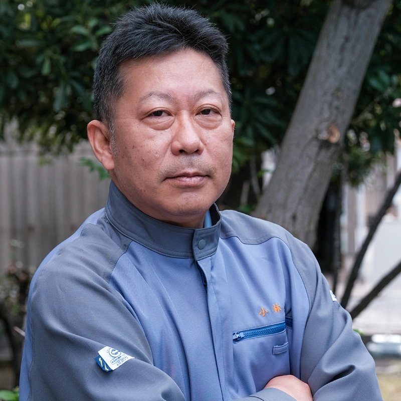

- HOME
- 研究・技術開発
- 研究者・技術者の人材育成制度
- リサーチフェロー/工務技監
- 小林 定之 / 化成品研究所
リサーチフェロー小林 定之

- 学位博士（工学）
- 所属化成品研究所
- 専門分野高分子構造設計
研究に対する想い
ポリマーアロイの分野は工業的な応用面が多いことから、東レにおいて一貫してポリマーアロイの研究・開発を生業としてきました。メーカーでの材料研究では、自らの知恵を入れた新技術で新製品を創出していく醍醐味があり、日々、充実した研究活動に励んでいます。ナノテクノロジーは、ノーベル物理学賞受賞のファインマン教授が1959年に講演会で提唱したのが発端ですが、ポリマーアロイの分野においても、現在ではより詳細な理論の発展と共に、ナノオーダーでの新たなアロイ化技術に進展してきています。今後とも専門性をさらに深化させ、新技術による新しい価値の創造を通じて社会に貢献していきたいと考えています。
主な論文
| 2007年 | e-Journal of Soft Materials, 3, p1-5 |
|---|---|
| 2009年 | 自動車技術 Vol.53、No.4、p27-29 |
| 2010年 | 未来材料 Vol.10、No.9、p52-55 |
| 2011年 | 高分子論文集 Vol68, No.9 p616-622 |
| Recent res. Devel. Polymer Science, 11, 1-2 | |
| Journal of Macromolecular Science, Part B: Physics, 50(11), 2061-2069 | |
| 2014年 | プラスチックエージ Vol.60、No.3、p100-104 |
| プラスチックエージ Vol.60、No.4、p116-121 | |
| NTS出版 高分子ナノテクノロジーハンドブック | |
| 2015年 | 成形加工 27巻４号, p130-133 |
| 2016年 | Journal of Macromolecular Science, Part B: Physics, 55(3), 229-250 |
| 2020年 | シーエムシー出版 ポリマーの強靱化技術最前線 |
| シーエムシー出版 ポリマーアロイ・ポリマーブレンド |
社外受賞歴
| 2006年 | nanotech2006 材料・素材部門賞 |
|---|---|
| 2014年 | nanotech2014 nano tech大賞 |
| 2015年 | 中部地方発明奨励賞 |
| 2019年 | nanotech2019 グリーンナノテクノロジー賞 |
| 2021年 | 日本化学会化学技術賞 |